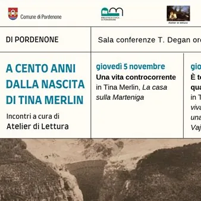

da gio 5 nov a gio 12 nov · dalle 17:30
A cento anni dalla nascita di Tina Merlin
Letture a cura di Atelier di lettura. Nell’anniversario dei cento anni dalla nascita di Tina Merlin, l’Atelier di lettura propone una lettura dei suoi libri per ricordare questo importante personaggio del Novecento, dalle molte sfaccettature e dalle molte valenze. Tina Merlin è…
 Indicazioni
Indicazioni
- Costi e prenotazioni
- Costo non indicato · Prenotazione non indicata
- Programma
- Programma da verificare. Apri la fonte ufficiale per orari e possibili aggiornamenti.
- In caso di maltempo
- Nessuna indicazione specifica pubblicata.
- Note
- Acquisito automaticamente dalla fonte.
L’EVENTO
Descrizione completa
Letture a cura di Atelier di lettura.
Nell’anniversario dei cento anni dalla nascita di Tina Merlin, l’Atelier di lettura propone una lettura dei suoi libri per ricordare questo importante personaggio del Novecento, dalle molte sfaccettature e dalle molte valenze. Tina Merlin è nata a Santa Tecla, una borgata di Trichiana in provincia di Belluno, lungo il torrente Marteniga, il 19 agosto 1926 in una famiglia numerosa e complicata, il padre emigrante, diversi fratelli e la vita dura della montagna.Dopo l'infanzia trascorsa nelle terre bellunesi, e gli anni di vita a Milano passati a fare la “serva” nelle famiglie abbienti, a soli 17 anni, entra nella Resistenza dove ricopre il ruolo di staffetta, con il nome di battaglia “Joe”, nel battaglione Manara. Alla Resistenza partecipa anche il fratello Toni, di cui Tina segue l'esempio. Sono riferiti a quei tempi i racconti contenuti nel libro: Menica e le altre. Fortemente segnata dall'esperienza resistenziale in senso morale ma anche nel senso di una maggiore coscienza di sé e della necessità di una emancipazione femminile, diventa giornalista dell'Unità. È la sola donna in una redazione tutta maschile e viene inviata sulle montagne bellunesi per raccontarne la vita e le vicissitudini, vicende che nessuno voleva raccontare. Nel 1959 è la prima e forse la sola a fare atto di denuncia contro il progetto della grande diga del Vajont e la SADE, la società elettrica che stava edificando quello che poi si rivelerà un tragico disastro con quasi 2000 morti ai piedi del Monte Toc. Per questa attività di denuncia verrà lei stessa querelata per diffusione di notizie false e tendenziose, processata e poi assolta. Dopo la tragedia del Vajont, Tina continua a scrivere e a portare avanti il suo giornalismo di inchiesta, nascono: Sulla pelle viva, La casa sulla Marteniga , la sua autobiografia, che verrà pubblicata postuma per l'intervento di Mario Rigoni Stern. Il suo stile di scrittura è secco, essenziale, senza ornamenti o orpelli, per narrare di donne, di diseredati, di emigranti, di braccianti, di coloro che vivono in una condizione difficile. Muore nel 1991 a 65 anni, povera, mai abbastanza riconosciuta in vita. Oggi che se ne riscopre il valore e la caratura morale, colpiscono il suo coraggio, sempre praticato nella sua vita e le sue caratteristiche di giornalista d'inchiesta.
Informazioni: 0434392976/ biblioteca@comune.pordenone.it
IL PROGRAMMA
Programma e orari
Appuntamenti raccolti dalle fonti elencate. Dove manca un orario, non è ancora disponibile in questa scheda.
Programma pubblicato
- Dal 2026-11-05 al 2026-11-12
INFORMAZIONI UTILI
Prima di partire
- Controllare la fonte prima di partire.
ORGANIZZAZIONE